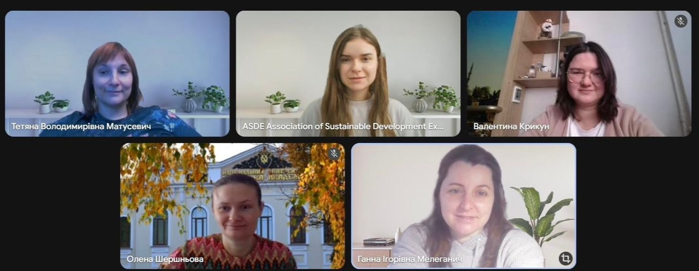

A working meeting of the Erasmus+ CBHE “Empowering Educators for Sustainable Future: Enhancing Teacher Training Capacity for Ukraine's Recovery” (EESF)
On March 12, 2026, a working meeting of the Erasmus+ CBHE “Empowering Educators for Sustainable Future: Enhancing Teacher Training Capacity for Ukraine's Recovery” (EESF) project team took place.
During the meeting, the participants focused on the discussion of the state of implementation of the tasks of work package 2 (WP2), analyzed the achieved results and outlined further steps in the implementation of the project. Special attention was paid to coordinating the activities of partners, coordinating approaches to the implementation of planned activities and ensuring their compliance with the overall strategy of the project.
Within the framework of the meeting, a plan for further work was also approved, which will ensure the effective implementation of the next stages of the project and the achievement of the specified results.
We work together on the development of modern pedagogical education, the implementation of the principles of sustainable development and the strengthening of the educational potential of Ukraine 💙💛
